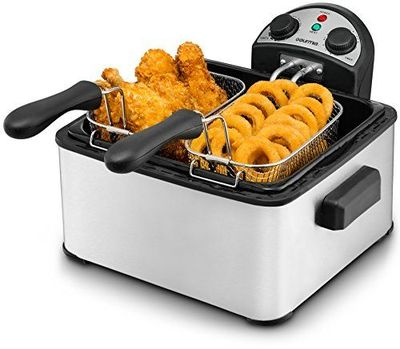
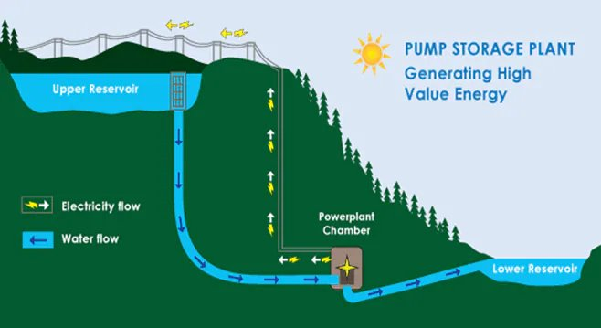
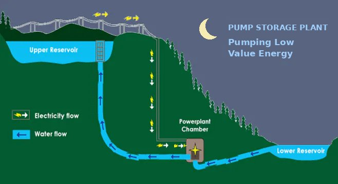
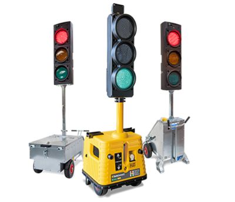
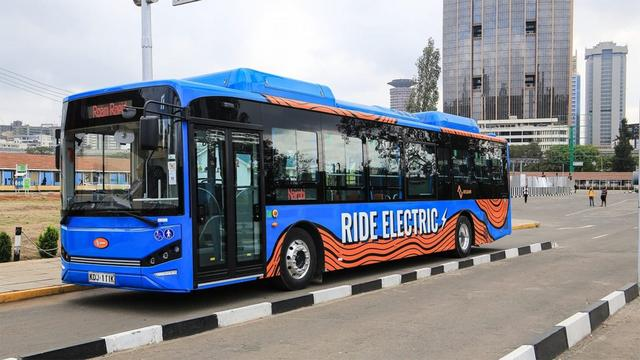
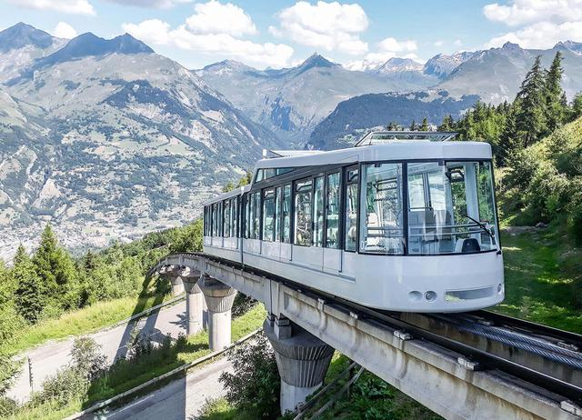

These notes build on National 5. At Higher you are expected to be confident with everything in the National 5 Energy and Efficiency notes: the forms of energy, work done, potential, kinetic, electrical and heat energy, energy audits, efficiency and power. Section 1 is a quick recap. If any of it feels unfamiliar, go back to the National 5 notes first — the Higher questions combine these formulae, so each one needs to be second nature.
Section 1: What You Should Already Know
Energy cannot be created or destroyed — it can only change from one form to another. This is the principle of conservation of energy, and it underpins every calculation in this topic. All the formulae below are in the Higher data booklet, but you need to know what each symbol means and which formula fits which situation.
Energy or quantity
Formula
Use it when…
Work done
Ew = Fd
a force moves something through a distance (pulling, pushing, lifting with a rope)
Weight
W = mg
you need the force due to gravity on a mass — for example the force a lift or crane must overcome
Potential energy
Ep = mgh
something is raised or lowered through a height (g = 9.8 ms-2)
Kinetic energy
Ek = ½mv2
something speeds up or slows down
Heat energy
Eh = cmΔT
something is heated or cooled (cwater = 4180 Jkg-1K-1)
Electrical energy
Ee = VIt
an electrical supply provides energy for a time
Elastic strain energy (new at Higher)
Es = ½Fx
something is stretched or compressed: springs, cables, shock absorbers (x = extension or compression)
Power
P = Et
you need the rate of energy transfer (watts = joules per second)
Efficiency
η = Euseful outEtotal in = Puseful outPtotal in
not all of the input energy ends up as useful output
Time must be in seconds in E = VIt and P = Et: multiply minutes by 60 and hours by 3600.
Mass must be in kilograms. For water, 1 litre has a mass of 1 kg.
Efficiency can be given as a decimal (0.75) or a percentage (75%), but use the decimal in calculations.
Give final answers to 2 significant figures with a unit, but keep full values in your calculator until the end.
Remember the difference between mass and weight. Mass (kg) is the amount of matter in an object. Weight (N) is the force on that mass due to gravity, W = mg. A question that says a lift raises “a load of 900 kg” gives you a mass; to use P = Fv or Ew = Fd you need the weight, 900 × 9.8 = 8820 N.
Efficiency at Higher. Always think of efficiency as useful energy (or power) out divided by the total energy (or power) put in. The data booklet writes it with Eout and Ein, but writing “useful out” and “total in” reminds you which values to use: the waste energy is never part of the top line.
Combining formulae — the main Higher skill
Almost every Higher energy question links two or three formulae together, often with an efficiency in the middle: the electrical energy used by a kettle and the heat energy taken in by the water, or the power from a motor and the potential energy given to a load. You will do this in every task from Section 2 onwards, so learn the strategy now.
A strategy for combined energy questions. 1. Write down the quantity you are asked for, and the formula that contains it. 2. Identify which energy (or power) is the useful one and which is the input. 3. Find the missing value from another formula — usually the “other end” of the system. 4. Use efficiency to move between input and useful output: useful = η × input, or input = usefulη. 5. Show every substitution: each step usually carries a mark, even if a later step goes wrong.
Marks are shown for each question, as in the Materials notes. They are a guide to how many steps (and usually how many formulae) the answer needs: a 3-mark calculation normally means two linked formulae and an answer.
Elastic strain energy — new at Higher
Elastic strain energy is the energy stored in a body when it is stretched or compressed, as long as it returns to its original shape when the force is removed. Like potential energy it is stored energy, but it is stored by changing the shape of the material rather than by raising it. It is the energy stored in a drawn bow, a compressed spring or a stretched lift cable.
Es = ½Fx
F is the force applied and x is the extension or compression in metres, in the direction of the force. The ½ is there because the force builds up gradually from zero to F as the material is stretched. You will use this formula again in the Materials notes, alongside stress, strain and Young’s modulus.
If a spring obeys Hooke’s law, the load and the extension are proportional, so the load–extension graph is a straight line through the origin. The work done stretching the spring is the area under the graph: a triangle with base x and height F. That is where the ½ comes from.
The strain energy stored is the shaded area under the load–extension graph.
🌀 Try it: stretch a spring
Drag the slider to hang a bigger load on the spring. Watch the extension, the point on the graph and the shaded area (the strain energy) grow together. Notice that doubling the load doubles the extension, so the energy stored goes up four times.
Worked example — elastic strain energy
1
A spring in a pipe-cutting machine is compressed by 40 mm by a force of 250 N. Calculate the strain energy stored.
2
x = 40 mm = 0.040 m
3
Es = ½Fx = 0.5 × 250 × 0.040 = 5.0 J
Section 2: Energy Audits
During an energy transformation, all the energy going in to a system must come out in some form — it has to go somewhere. Unfortunately, not all of it comes out as useful energy. A generator is designed to convert kinetic energy into electrical energy, but friction in its bearings also produces heat. That heat is no use for generating electricity, so it is called waste energy (sometimes, confusingly, “lost” energy — it is not really lost, just not useful).
Etotal in = Euseful out + Ewaste
Even systems designed to produce heat have losses. A kettle element is meant to heat the water, but some energy heats the kettle body and some escapes into the room. Because the total energy in a closed system is constant, we can still carry out useful calculations as long as we account for every form of energy going in and coming out. This is an energy audit.
Worked example — energy audit of a lamp
1
A 60 W filament lamp is switched on for 5.0 minutes inside a sealed, insulated box containing 1.5 kg of air (cair = 1000 Jkg-1K-1). The temperature of the air rises by 10.8 °C. All the energy that is not light ends up heating the air in the box. Carry out an energy audit and calculate the efficiency of the lamp.
2
Total energy in (electrical): E = Pt = 60 × (5.0 × 60) = 18 000 J = 18 kJ
3
Waste energy (heat into the air): Eh = cmΔT = 1000 × 1.5 × 10.8 = 16 200 J ≈ 16 kJ
4
Useful energy (light): energy in = energy out, so Elight = 18 000 − 16 200 = 1800 J = 1.8 kJ
5
Efficiency = Euseful outEtotal in = 180018 000 = 0.10, so η = 10%. The other 90% is wasted as heat.
An energy audit can be shown as a diagram. The exam uses this layout: the input energy enters on the left, the useful output leaves on the right, and the waste energy leaves at the bottom. Each arrow is labelled with the form of energy and its value, and the efficiency is stated.
Exam tip. In an energy audit question, marks are usually given for (1) calculating the input energy, (2) calculating the waste energy, (3) calculating the efficiency, and (4) completing the diagram with every value in place. Write the energy form as well as the number on each arrow.
Why efficiency matters
Making products and processes more efficient reduces the waste energy, which saves money. It also reduces greenhouse gas emissions. Much of the world’s electricity, and some of the UK’s, is still generated in power stations that burn fossil fuels such as gas and coal, and burning them releases carbon dioxide, a greenhouse gas. Every joule of electricity that a device wastes has to be generated somewhere, so wasting less energy means burning less fuel.
Lamps are a good example. An old filament lamp makes light by heating a thin coil of wire until it glows white-hot, so it is only about 10% efficient — 90% of the electrical energy becomes heat, which is no use in a lamp. An LED lamp makes light directly in tiny semiconductor chips and converts roughly 40% of its electrical energy into light.
Filament lamp: a glowing coil of wire
LED lamp: rows of small LED chips, with a heat sink in the base
LED lamps cost more to buy, but they last far longer, so fewer lamps are bought and thrown away, and they use much less electricity, so running costs and the carbon footprint are both lower. This is a typical engineering trade-off: a higher initial cost repaid by lower running costs and a smaller environmental impact.
Try it: energy audit builder
Type in any device and its energies. The diagram redraws itself with the waste energy and efficiency worked out — the arrow widths show how the energy splits. Use it to check your answers to Task 1.
⚡ Energy audit builder
✏️ Task 1 — Energy audits
1. A 2.2 kW kettle heats 1.2 kg of water from 15 °C to 100 °C in 3.5 minutes. Calculate its efficiency. 3
Answer
2. A container holds 1.5 litres of water at 20 °C. A heater operating from a 240 V supply draws 8.0 A and is 75% efficient. Calculate how long it takes to heat the water to 90 °C. 3
Answer
3. An electric shower is rated at 9.5 kW. Every second it heats 0.050 kg of water from 10 °C to 40 °C. Calculate the efficiency of the shower. 3
Answer
4. A deep fat fryer uses 2.0 kJ of electrical energy per second. It raises the temperature of 1.5 kg of cooking oil from 20 °C to 80 °C in six minutes. The specific heat capacity of the oil is 2400 Jkg-1K-1. (a) Calculate the heat energy taken in by the oil. 1

Answer
(b) Calculate the heat energy taken in by the oil every second. 1
Answer
(c) Calculate the efficiency of the fryer. 1
Answer
5. A lift raises a mass of 200 kg through a height of 10 m in two minutes. The lift motor uses 0.84 MJ of energy in one hour. Calculate the efficiency of the lift. 3
Answer
6. An engineer tests a 12 V, 7.5 A car-tyre compressor and finds that it produces 430 J of useful energy in 15 seconds. Calculate the input energy and the efficiency, then draw an energy audit diagram. 4
Answer
7. A vending machine heats one cupful of water (0.15 kg) from 30 °C to 90 °C. The heating element operates from 240 V and has a resistance of 12 Ω. Calculate: (a) the current drawn; (b) the heat energy transferred to the water; (c) the time taken if the system is 100% efficient; (d) the percentage of energy wasted if it actually takes 12 seconds. 6
Answer
8. Draw an energy audit diagram for the vending machine in question 7 (when it takes 12 s), showing all energies and the efficiency. 2
Answer
Combining energy formulae
The examples below link two energy formulae, using the strategy from Section 1. Each one is typical of a 2 or 3 mark question.
Worked example — regenerative braking
1
An electric car of mass 1500 kg slows from 25 ms-1 to 10 ms-1. Its energy recovery system is 70% efficient. Calculate the energy recovered.
2
Change in kinetic energy = Ek before − Ek after = ½ × 1500 × (252 − 102) = ½ × 1500 × 525 = 393 750 J
Common mistake: using the change in speed, ½ × 1500 × (25 − 10)2, gives 168 750 J, which is wrong. Kinetic energy depends on speed squared, so you must square each speed first, then subtract.
Worked example — gravity energy storage
1
An energy storage system uses spare electricity to lift an 8000 kg block through 40 m. The lifting system is 90% efficient. Calculate the electrical energy needed to raise the block.
2
Useful energy = Ep = mgh = 8000 × 9.8 × 40 = 3 136 000 J
3
This is the output, so the input must be bigger: Etotal in = Euseful outη = 3 136 0000.90 = 3 484 000 J = 3.5 MJ
Worked example — heating a brake disc
1
A load of 600 kg is lowered at constant speed through 18 m, controlled by a steel brake disc (c = 460 Jkg-1K-1). The disc temperature rises by 120 °C. Assuming all the potential energy becomes heat in the disc, calculate the mass of the disc.
2
Ep = mgh = 600 × 9.8 × 18 = 105 840 J, and this all becomes Eh
3
Eh = cmΔT, so m = EhcΔT = 105 840460 × 120 = 1.9 kg
Worked example — battery efficiency from waste energy
1
A battery rated at 24 V provides 60 A for 5.0 hours. During this time it produces 4.5 MJ of waste energy. Calculate its efficiency.
2
Etotal in = VIt = 24 × 60 × (5.0 × 3600) = 25 920 000 J
1. Calculate the kinetic energy lost when a 900 kg car slows from 30 ms-1 to 10 ms-1. 2
Answer
2. In a pumped-storage scheme, 5000 kg of water is pumped up through a height of 120 m. The pump is 80% efficient. Calculate the electrical energy used. 2


Day: water flows down through the turbines to generate electricity when demand is high.Night: cheap electricity pumps the water back up to the upper reservoir.
Answer
3. A forklift truck’s battery is rated at 48 V and supplies 110 A for 8.0 hours. It is 85% efficient. Calculate the waste energy produced. 3
Answer
4. A catapult stores energy in its elastic band, which is pulled back 0.30 m by a force of 120 N. All the strain energy is transferred to a 0.050 kg ball. Calculate the speed of the ball as it leaves the catapult. 3
Answer
Section 3: Power and Efficiency
Power is the rate at which energy is transferred: one watt is one joule per second. At Higher you need four ways of finding power, depending on what you are told.
Formula
Where it comes from
Typical use
P = Et
definition of power
any energy transferred in a known time
P = VI
Ee = VIt divided by t
the electrical input to a motor, heater or pump
P = Fv
Ew = Fd divided by t, and dt = v
a force moving something at a steady speed (winches, conveyors, vehicles)
P = 2πnT
torque turning through 2π radians, n times a second
a rotating shaft (n in revolutions per second, T in Nm)
Efficiency can be calculated from either energies or powers, because the time is the same for both input and output:
η = Euseful outEtotal in = Puseful outPtotal in
Worked example — efficiency of a winch
1
A winch pulls a boat up a slipway with a steady force of 1.2 kN at 0.80 ms-1. The winch motor takes 1.2 kW from the supply. Calculate the efficiency of the winch.
2
Puseful out = Fv = 1200 × 0.80 = 960 W
3
η = Puseful outPtotal in = 9601200 = 0.80, so η = 80%
Worked example — efficiency of a motor
1
A motor runs at 1450 rev min-1 and delivers a torque of 6.5 Nm. It is supplied with 230 V and draws 5.2 A. Calculate its efficiency.
2
n = 145060 = 24.17 revolutions per second
3
Puseful out = 2πnT = 2 × π × 24.17 × 6.5 = 987 W
4
Ptotal in = VI = 230 × 5.2 = 1196 W
5
η = 9871196 = 0.83, so η = 83%
Rotational speed is usually given in rev min-1, but P = 2πnT needs revolutions per second. Divide by 60 first — forgetting this makes the answer 60 times too big.
Worked example — time to fill a tank
1
A tank holding 1800 litres of water is filled by an electric pump rated at 230 V, 4.0 A. The pump is 85% efficient and the tank inlet is 3.5 m above the pump. Calculate the time taken to fill the empty tank.
2
Useful energy = potential energy given to the water: Ep = mgh = 1800 × 9.8 × 3.5 = 61 740 J
3
Electrical input power: Ptotal in = VI = 230 × 4.0 = 920 W, so useful power Puseful out = 0.85 × 920 = 782 W
4
t = EP = 61 740782 = 79 s
✏️ Task 3 — Power and efficiency
1. A shaft delivers a torque of 12 Nm at 960 rev min-1. Calculate the power transmitted. 2
Answer
2. A crane lifts a load of 2.5 kN at a steady 0.40 ms-1. Its motor takes 1.6 kW. Calculate the efficiency of the crane. 2
Answer
3. An industrial extractor fan motor runs from 400 V and draws 9.0 A. It is 88% efficient and turns at 1500 rev min-1. Calculate the torque delivered by the motor. 3
Answer
4. A hoist runs from 400 V and draws 15 A. It raises a 900 kg load at a steady 0.50 ms-1. Calculate the efficiency of the hoist. 4
Answer
5. A 1200 kg electric car accelerates from rest to 20 ms-1 in 8.0 s. Its drive system is 75% efficient. Calculate the average electrical power taken from the battery. 4
Answer
6. Explain why no real machine can have an efficiency of 100% or more. 2
Answer
Section 4: Energy Audits of Complex Systems
Real engineering systems pass energy through several sub-systems, and each one wastes some of it. A hydro-electric scheme, for example, passes the energy of moving water through a turbine, then a generator, then a transformer before it reaches the grid. The useful output of one sub-system is the input to the next, so an energy audit of the whole system is just a chain of the energy audits you met in Section 2.
In the exam you may be given an energy audit diagram for a system with two or three sub-systems and asked to complete the missing values. For each sub-system, use the same two ideas:
Etotal in = Euseful out + Ewaste
η = Euseful outEtotal in (the same works with powers)
Energy audit for one second of operation. Values in orange are worked out in the example below.
Worked example — completing an energy audit for a hydro scheme
1
Each second, water with 4.0 MJ of kinetic energy enters the turbine of a hydro scheme. The turbine wastes 0.32 MJ. The generator is 96% efficient, and the transformer delivers 3.46 MJ to the grid. Complete the energy audit.
2
Turbine: useful out = 4.0 − 0.32 = 3.68 MJ, so η = 3.684.0 = 0.92 = 92%
3
Generator: its input is the turbine’s output, 3.68 MJ. Useful out = 0.96 × 3.68 = 3.53 MJ, so waste = 3.68 − 3.53 = 0.15 MJ
4
Transformer: input = 3.53 MJ and useful out = 3.46 MJ, so waste = 3.53 − 3.46 = 0.07 MJ and η = 3.463.53 = 0.98 = 98%
5
Check: the total waste, 0.32 + 0.15 + 0.07 = 0.54 MJ, plus the 3.46 MJ delivered adds up to the 4.0 MJ that went in. Every stage adds losses, which is why engineers try to keep energy conversion chains short.
Worked example — a wind turbine
1
Each second, 60 000 kg of air travelling at 10 ms-1 passes through the circle swept by the blades of a wind turbine. The blades and rotor transfer the air’s kinetic energy into rotational energy with an efficiency of 40%. The generator is 95% efficient. Calculate the electrical energy output each second.
2
Kinetic energy of the air each second: Ek = ½mv2 = 0.5 × 60 000 × 102 = 3 000 000 J = 3.0 MJ
3
Rotational energy out of the rotor = 0.40 × 3.0 = 1.2 MJ (so 1.8 MJ of the air’s energy is not captured)
4
Electrical energy = 0.95 × 1.2 = 1.14 MJ ≈ 1.1 MJ each second, which is a power output of about 1.1 MW
Going further (Advanced Higher)
Because each stage passes on a fraction of its input, the overall efficiency of a chain can be found by multiplying the stage efficiencies: ηoverall = η1 × η2 × η3. For the hydro scheme, 0.92 × 0.96 × 0.98 = 0.87. You will not be asked to use this in the Higher exam.
This is the type of audit the course specification asks you to carry out on a complex system — such as the one you chose for the Systems Approach project. Identify every stage, the energy form entering and leaving it, and where energy is wasted.
✏️ Task 4 — Complex systems
1. A winch system has a motor, a gearbox and a drum. The motor takes 2.0 kW and is 85% efficient. The gearbox wastes 0.14 kW, and the drum delivers 1.5 kW of useful power to the load. Complete the energy audit by calculating: (a) the output power of the motor and the power it wastes; (b) the output power and efficiency of the gearbox; (c) the power wasted by the drum and its efficiency. 6
Answer
2. Draw an energy audit diagram for one stage of a system you have studied, then describe where the waste energy goes and suggest one way an engineer could reduce it. 4
Answer
3. Each second, 25 000 kg of air travelling at 12 ms-1 passes through the blades of a smaller wind turbine. The blades and rotor are 40% efficient and the generator is 92% efficient. Calculate the electrical power output, and the energy wasted each second by each sub-system. 4
Answer
Section 5: Exam-Style Questions
These questions are written in the style of the Higher question paper. Try each one under timed conditions (about 1.5 minutes per mark), then check against the model answers.
Question 1 — Roadworks traffic lights

Temporary traffic lights at roadworks run from a battery rated at 12 V, 40 A. In 10 hours the useful light energy produced is 13 MJ.
🔍 Question 1 — Traffic lights
Complete an energy audit diagram for the traffic light battery, showing the input and output energies, the waste energy and the efficiency. 3
Answer
Question 2 — Distillery still
In a Speyside distillery, 2000 litres of liquid (treat as water, c = 4180 Jkg-1K-1) is heated in a still from 20 °C to 78 °C. The heating system has a power rating of 250 kW and is 92% efficient.
🔍 Question 2 — Distillery still
Calculate the time taken to heat the liquid. 3
Answer
Question 3 — Electric bus

An electric bus has a mass of 18 000 kg. Its two 160 kW motors are 85% efficient at full power, and its battery stores 1.1 GJ when fully charged. When the bus slows down, an energy recovery system that is 65% efficient recharges the battery.
🔍 Question 3 — Electric bus
(a) Calculate how long the bus can run at full power before the battery is flat. 2
Answer
(b) Calculate the energy recovered when the bus slows from 14 ms-1 to 4.0 ms-1. 3
Answer
Question 4 — Mountain funicular

A mountain funicular railway raises a carriage and passengers of total mass 12 000 kg through a vertical height of 460 m in 8.0 minutes. The drive motor takes an average input power of 160 kW during the journey.
🔍 Question 4 — Funicular
Calculate the efficiency of the funicular drive system. 3
Answer
Question 5 — Workshop drill
A pillar drill motor is rated at 230 V, 3.5 A and is 78% efficient. When drilling, the drill bit experiences a torque of 2.2 Nm.
🔍 Question 5 — Pillar drill
Calculate the rotational speed of the drill in rev min-1. 4
Answer
Section 6: Design Challenges
Each challenge is an open-ended engineering problem. There is no single right answer: you must make sensible assumptions, show your calculations clearly, and evaluate your design. State every assumption you make.
Challenge 1 — Gravity energy store in a Fife mine shaft
A community energy company plans to reuse a disused mine shaft in Fife to store surplus electricity from local wind turbines. Heavy weights are winched up the shaft when there is spare electricity, and lowered to drive a generator when it is needed.
i
The system must deliver 10 MJ of useful electrical energy each time the weights are lowered.
ii
The usable depth of the shaft is 250 m.
iii
The lowering and generating system is 85% efficient.
iv
The energy must be delivered over 20 minutes.
⛏️ Challenge 1 — Gravity store
Calculate the total mass of the weights needed and the average electrical power delivered. Then suggest two further design decisions the engineers would need to make, and evaluate whether this is a sensible way to store energy.
Answer
Challenge 2 — Hot showers at a Highland bothy
A mountain bothy in the Highlands is fitting a solar-powered hot shower. Solar panels charge a 48 V battery bank during the day, and an electric heater warms the shower water.
i
Each shower uses 40 litres of water, heated from a stream temperature of 8 °C to 40 °C.
ii
The heater is 90% efficient.
iii
Up to four showers a day must be possible from the battery.
🚿 Challenge 2 — Bothy shower
Calculate the electrical energy needed each day, and the battery capacity this represents in ampere-hours (Ah). Then evaluate the design and suggest one improvement.
Answer
Challenge 3 — E-bike over a Highland pass
A cycle hire company wants to know whether its e-bikes can manage a famous Highland mountain road that climbs 600 m.
i
Rider and bike have a total mass of 100 kg.
ii
The motor provides 70% of the energy needed to climb; the rider provides the rest.
iii
The motor and drive are 80% efficient.
iv
The battery is rated at 36 V and 14 Ah.
🚲 Challenge 3 — E-bike climb
Calculate the battery energy used on the climb and the percentage of a full battery this represents. Identify the assumptions you have made and explain how they affect your answer.
Answer
💾 Answers saved automatically in this browser on this device.